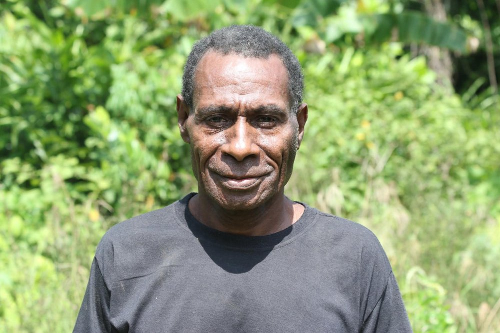
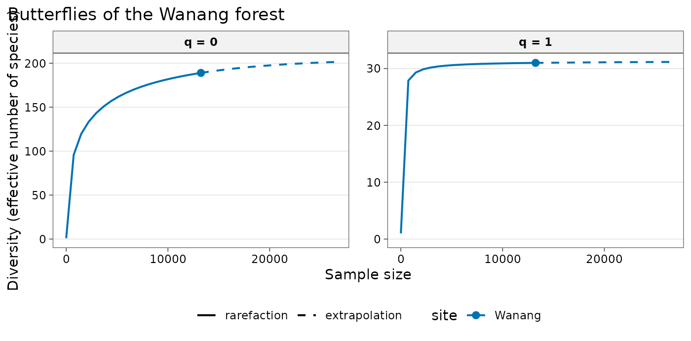

tidydiversity is dedicated to the memory of Filip Damen, who died after a long illness at Madang Hospital on 1 November 2026, aged around 60. Much of what this package measures exists, in Papua New Guinea, because of him.
The account below is adapted, with gratitude, from the obituary written by Professor Vojtěch Novotný, the tropical ecologist who has worked alongside Filip for decades. Professor Novotný (University of South Bohemia and the Biology Centre of the Czech Academy of Sciences) co-founded the New Guinea Binatang Research Center, which runs the Swire Research Station in the Wanang Conservation Area.
The forest he kept
Filip was born in Wanang Village, a roadless place deep in the rainforests along the Ramu River, where half of his siblings died young. In middle age, the loggers came, preceded by officers of the PNG Forest Authority, with cash, royalties for the village’s trees and the promise of roads. Filip refused every approach, including the last one, when a bag of cash arrived by helicopter. Convinced by him, the other clan leaders of Wanang refused too.
Leaders in other villages were drawn to the idea of conservation, but their resolve weakened before promises of a better material life. For a while, as logging moved in nearby, it looked as if Filip had led his community to the losing side. He never hesitated: his decision was not a calculation of profit.
The scientists’ hunt
Slowly, scientists began to arrive, valuing his forest as he did. A keen hunter who knew its birds and animals intimately, Filip understood that these students and professors were on a hunt of their own, for the most obscure plants, insects and fungi. Through them came other friends, including the Swire family, who wished to support what Filip was doing. Helicopters delivered four-tonne loads of building materials to a small hill above the meeting of two streams, the spot Filip had chosen as the most auspicious place for a research station.
The Swire Research Station, half a day’s walk through the forest, drew researchers from all over the world. They trained villagers from Wanang, Filip’s sons among them, so that over the years a village of about 300 people produced more botanists, ornithologists and entomologists for Papua New Guinea than any local university. Botanists mapped the 288,000 trees of the forest dynamics plot. Every two years, Papua New Guinean and European students came to learn the plants and animals, taught by their professors and by the villagers.
Recognition, and what it built
Filip welcomed the Prince of Monaco to the station with a traditional lizard-skin drum and a feast, and the Prince left the station a new solar power system. In Paris, on the stage of the Théâtre Mogador, Gro Harlem Brundtland presented Filip with the UNDP Equator Prize for inventive conservation.
The prize funded a village school, the first in the wider area. A class and a classroom were added each year up to grade eight, and in time the school had its first university graduate. A health post followed, again the first in the area. Filip opened both to the children and families of all six surrounding villages.
A conservation area, an international research station with trained staff, a primary school and a health post: built and maintained by a whole community, but not without Filip’s leadership.
Wanang in this package
The wanang_butterflies data in tidydiversity were
collected in the Wanang 50 ha forest dynamics plot, on the land Filip
and his community protected (Luk et al. 2019). Every species in the
curve below lives in the forest he refused to sell to the loggers.
wanang <- div_rarefy(
dplyr::mutate(wanang_butterflies, site = "Wanang"),
abundance = abundance, q = c(0, 1)
)
autoplot(wanang) +
labs(title = "Butterflies of the Wanang forest")
Sources
- Novotný, V. (2026). Filip Damen obituary. Posted on Facebook: https://www.facebook.com/share/p/1C7xdkU3AV/
- Papua New Guinea: Two Worlds, a video feature on Filip Damen (in English) by Czech Television: https://filmfreeway.com/PapuaNewGuinetwoworlds
- Luk, C.-L., Basset, Y., Kongnoo, P., Hau, B. C. H. and Bonebrake, T. C. (2019). Inter-annual monitoring improves diversity estimation of tropical butterfly assemblages. Biotropica, 51, 519-528. doi:10.1111/btp.12671